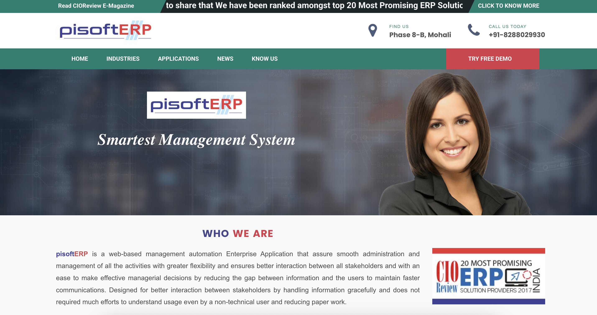

Hello, I'm
Nikhil Kumar Singh
Java Backend Engineer & Software Engineer
Building scalable backend systems, cloud-native applications and high-performance APIs using Java, Spring Boot, AWS, Kafka and Elasticsearch.

Hello, I'm
Building scalable backend systems, cloud-native applications and high-performance APIs using Java, Spring Boot, AWS, Kafka and Elasticsearch.
Software Developer with 3.4+ years of experience building scalable backend systems, ERP platforms, marketplace applications, travel booking solutions, and SaaS products. Experienced in Java, Spring Boot, Microservices, Elasticsearch, AWS, SQL and distributed system design. Delivered business-critical solutions across CRM, inventory management, finance, appointment scheduling, workflow automation, government document verification (PAN/Aadhaar) and customer-facing booking platforms. Proven ability to optimize performance, reduce infrastructure costs and develop reliable systems serving thousands of users. I just completed my MSc in Data Analytics at Dublin Business School, combining software engineering expertise with data-driven decision making and AI technologies.

Government Single Window Clearance System helping businesses obtain approvals, licenses and permissions digitally.

International travel booking platform serving thousands of customers worldwide. Worked on booking workflows, search optimization, API development and backend systems.

A multi-tenant ERP platform designed to automate and streamline operations across Education, Finance, Healthcare, Travel, Automobile and Service industries. The platform provided centralized management for CRM, HRMS, Finance, Inventory, Lead Tracking, Reporting, Task Management and Appointment Scheduling, enabling organizations to digitize and optimize their business processes.
Beauty and wellness marketplace featuring appointment booking, analytics dashboards, customer management, staff management, voucher management, service booking, and payment processing systems.


Personal SaaS project focused on inventory management, warehouse operations, stock movement tracking, reporting and user management.
Dublin Business School
2025 - 2026Chandigarh University
2019 - 2022nikhilbholu083@gmail.com
+353 89 454 2249
Dublin, Ireland